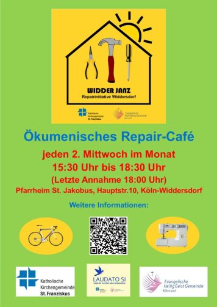

Repair Café Köln-Widdersdorf

Widder-janz
Viel zu oft werden Dinge viel zu schnell entsorgt.
Ob der Toaster streikt, das Radio rauscht, der Staubsauger nicht mehr will oder die Stehlampe dunkel bleibt –
oft muss nur eine Kleinigkeit gerichtet werden.
Jeden 2. Mittwoch im Monat von 15.30 bis 18.30 Uhr (Letzte Annahme 18:00 Uhr)
startet das Repair Café in Widdersdorf im Pfarrheim St. Jakobus.
In Repair Cafés unterstützen ehrenamtliche Reparateur*innen die Besucher*innen dabei, ihre defekten Haushaltsgeräte zu reparieren.
So wird in netter Atmosphäre die Lebensdauer von Alltagsgegenständen verlängert, Müll vermieden und alle lernen dazu.
Die Regeln / Hausordnung sind hier nachzulesen.
Die nächsten Termine im Repair Café Widdersdorf
- 9.9.2026
- 14.10.2026
- 11.11.2026
- 9.12.2026
Eine Anmeldung ist nicht erforderlich, aber eine E-Mail an
widdersdorf@repaircafe-koeln.de
mit Gerätebezeichnung, Alter des Geräts, eventuellen Fotos und einer Fehlerbeschreibung hilft uns, uns auf die Reparatur vorzubereiten.
Eine E-Mail bedeutet aber nicht, dass man in der Reihenfolge Vorrang hat.
Was repariert wird
Alles was man tragen kann, insbesondere Haushaltsgeräte und Kleinelektronik, sowie Fahrräder.
Wir bieten auch Hilfe bei kleinen Näharbeiten sowie bei Laptop Fragen/Problemen an.
Helfer
Du bist handwerklich begabt und tüftelst gerne? Dann bist Du im Repair Café genau richtig: Wir suchen immer engagierte Reparateur*innen.
Wir freuen uns auf deine E-Mail: widdersdorf@repaircafe-koeln.de